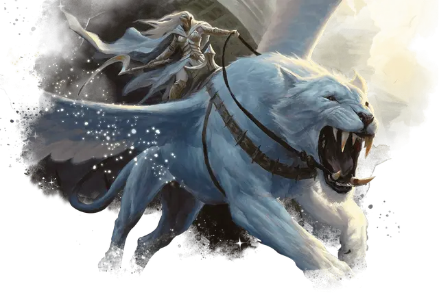

Пепельная наездница
Ashen Rider
Средний Небожитель, законно-злой

Класс Доспеха 18 (латы)
Хиты 178 (21к8 + 84)
Скорость 30 футов
| мод | спас | ||
|---|---|---|---|
| СИЛ | 20 | +5 | +10 |
| ЛОВ | 16 | +3 | +3 |
| ТЕЛ | 19 | +4 | +9 |
| мод | спас | ||
|---|---|---|---|
| ИНТ | 15 | +2 | +2 |
| МДР | 21 | +5 | +10 |
| ХАР | 18 | +4 | +9 |
Навыки Восприятие +10, История +7, Проницательность +10
Иммунитет к урону звук
Иммунитет к состояниям испуг, истощение, очарование
Чувства истинное зрение 120 футов, пассивное Восприятие 20
Языки Все
Опасность 16 (15000 опыта)
Бонус мастерства +5
Особенности
Аура тишины. Когда существо начинает свой ход в пределах 30 футов от пепельной наездницы, наездница может заставить это существо совершить спасбросок Мудрости Сл 18, если наездница может его видеть. В случае успеха существо становится невосприимчивым к этой ауре в течение следующих 24 часов. При провале существо не может говорить и становится оглохшим до начала своего следующего хода.
Врождённое колдовство. Базовой характеристикой наездницы является Мудрость (Сл спасброска от заклинания 18). Она может накладывать следующие заклинания, не нуждаясь в материальных компонентах:
• Неограниченно: приказ [command], вызов на дуэль [compelled duel];
• 1/день каждое: изгнание [banishment], стена клинков [blade barrier].
Скакун. Если наездница не на скакуне, она может использовать бонусное действие, чтобы магически телепортироваться на существо, служащее её скакуном, при условии, что наездница и её скакун находятся на одном плане существования. При телепортации, наездница появляется верхом на скакуне вместе со всем снаряжением, которое она носит или несёт. Будучи верхом и дееспособной, наездница не может быть застана врасплох, и она, как и ей скакун имеют преимущество на спасброски Ловкости. Если хиты наездницы уменьшаются до 0 во время езды на скакуне, то и хиты скакуна уменьшаются до 0.
Действия
Мультиатака. Пепельная наездница совершает три атаки своим Пепельным клинком или две атаки Пепельным снарядом.
Пепельный клинок. Рукопашная атака оружием: +10 к попаданию, досягаемость 10 футов, одна цель. Попадание: 14 (2к8 + 5) рубящего урона плюс 13 (2к12) урона излучением.
Пепельный снаряд. Дальнобойная атака заклинанием: +10 к попаданию, дистанция 120 футов, одно существо. Попадание: 22 (4к10) урона некротической энергией, и цель не может восстанавливать хиты до начала следующего хода пепельной наездницы.
Легендарные действия
Пепельная наездница может совершать 3 легендарных действия, выбирая из указанных ниже вариантов. Лишь одно легендарное действие может быть совершено за раз, и только в конце хода другого существа. Пепельная наездница восстанавливает истраченные действия в начале своего хода.
Атака. Наездница совершает атаку Пепельным клинком или Пепельным снарядом.
Скоординированная атака (стоит 2 действия). Наездница совершает атаку пепельным клинком или снарядом, после чего её скакун может использовать свою реакцию для совершения рукопашной атаки оружием.
Обратить в пепел (стоит 3 действия). Пепельная наездница нацеливается на существо, которое она может видеть в пределах 60 футов. Цель должна преуспеть в спасброске Телосложения Сл 18, иначе она получит 27 (5к10) урона некротической энергией, и ее максимум хитов уменьшается на значение, равное полученному урону некротической энергией. Это уменьшение длится до тех пор, пока существо не окончит продолжительный отдых. Если максимум хитов цели уменьшается до 0, то её тело и всё, что на ней надето и что она носит, за исключением магических предметов, обращается в пепел. Существо, превращенное в пепел, нельзя оживить никаким способом, кроме как заклинанием исполнение желаний [wish].
Описание
Падение древних империй архонтов породило в некоторых архонтов озлобленность и обиду. Стремясь избежать распространения человеческой цивилизации, эти архонты пробрались в Подземное царство. Ужасы этого места сломали их разум, тела и дух, и превратили их в ужасающих архонтов, известных как пепельные наездники. Когда они выезжают в мир смертных, перепуганные смертные делают подношения в отчаянной попытке успокоить их, но пепельные наездники не милосердны, и им нравится превращать воплощения мира смертных в пепел.
Архонты
Таинственные завоеватели, известные как архонты, когда-то правили огромными империями. Эти закованные в броню военачальники считали себя поборниками безжалостной справедливости и правили железной хваткой. Но их господству в конечном счете пришел конец. Когда архонты-правители были свергнуты, они рассеялись по окраинам мира, и их владения превратились в современные полисы.
Несмотря на то, что эпоха архонтов давно прошла, многие задаются вопросом, смогут ли немногие выжившие архонты когда-нибудь попытаться восстановить свою империю или они действительно смирились со своей меньшей ролью в мире.